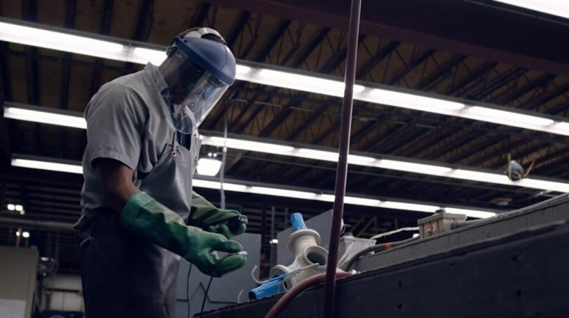
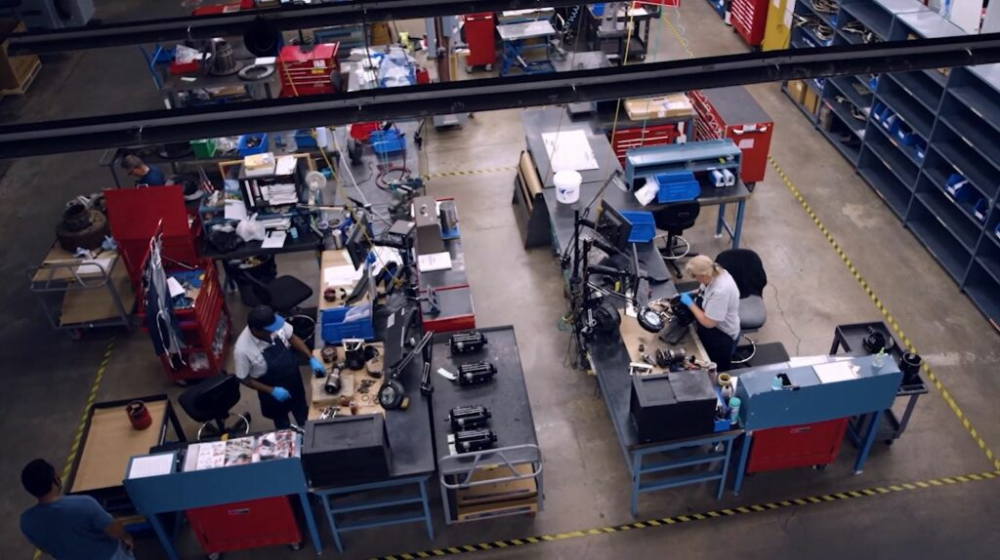
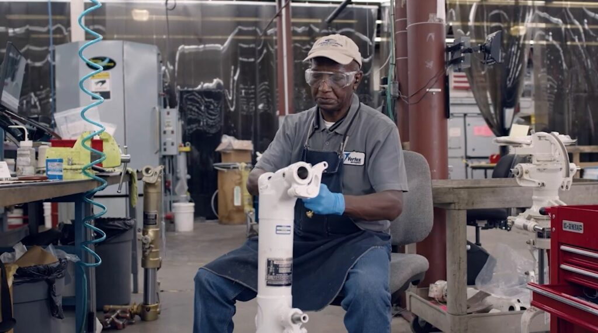
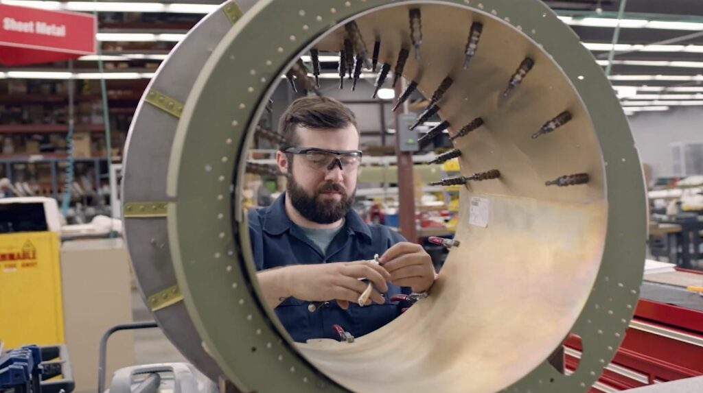
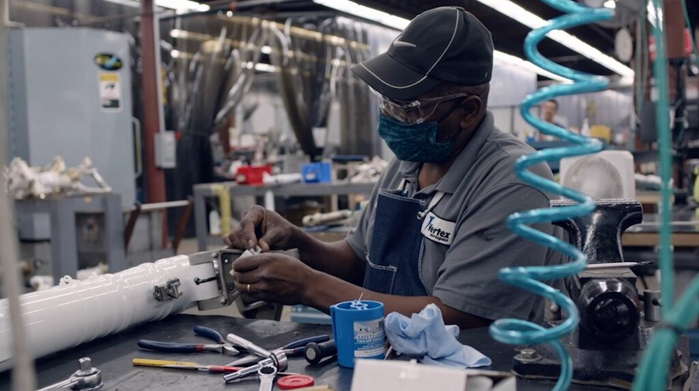
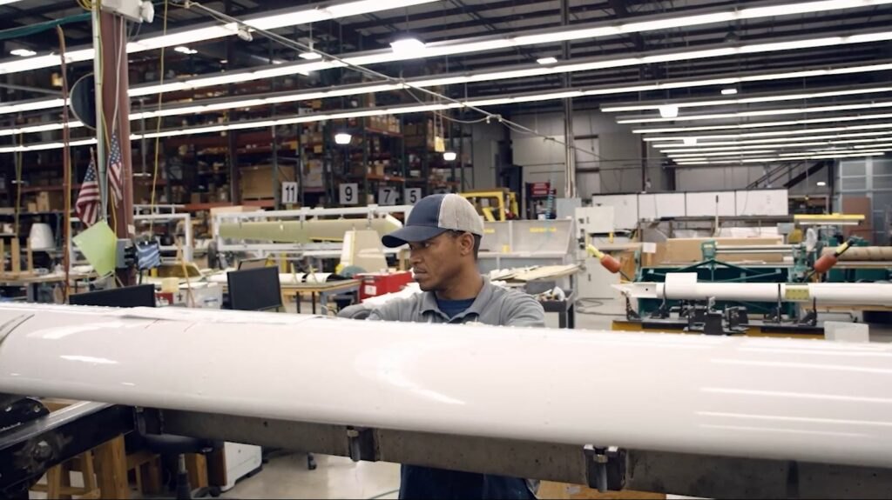

Located in Madison, Mississippi, A51E Madison Repair Station is a premier provider of aerospace component servicing and manufacturing. With FAA certification and an unwavering commitment to excellence, we ensure that every service meets the highest standards of quality, reliability, and regulatory compliance.






WHY CHOOSE A51E MADISON REPAIR STATION?
• Comprehensive Capabilities. From control systems to propulsion components, we provide full-service repairs for both commercial and military aircraft.
• Global Reach. Strategically positioned to service and repair thousands of aircraft components and avionics worldwide.
• Strict Quality Standards. We adhere to FAA regulations and rigorous quality control protocols, ensuring superior craftsmanship in every repair.
• Commitment to Continuous Improvement. We embrace innovation and process enhancements to exceed customer expectations.
• Reliable Partner for the Aerospace Industry. At A51E Madison Repair Station, we don't just repair aircraft components – we ensure safety, performance, and longevity. Trust us to keep you flying with uncompromising quality and industry-leading service.
SPECIALIZED CAPABILITIES
NDT Level III Inspection Services
• Magnetic particle
• Ultrasonic
• Eddy current
• Fluorescent penetrant
Machine Shop Capabilities
• CNC machining
• Milling
• Boring
• DER repairs
Cadmium Plating
• In accordance with QQ-P-416
OUR CORPORATE QUALITY STANDARDS INCLUDE
• FAR Part 145
• EASA 145
• ISO AS9100
• ISO AS9110
SERVICES
• Aircraft ground support equipment
• Painting
• Cadmium plating
• FAA-centric inspection and maintenance
• Control systems
• Wheels and brakes
• Electrical systems
• Structural and composite components
• Flight control surfaces
• NDT Level III inspection services – Onsite and deployable
• Wing spar inspections – Beech King Air SIRM inspection certified
• Selective nickel plating
• Avionics and starter generators
• Landing gear and components
• Hydraulic and fuel systems
• Propeller – McCauley, Hartzell
DER REPAIRS
We restore non-conforming parts to full compliance.
Our shop is supported by Designated Engineering Representatives (DER) in aerospace.
Technical Approvals
DERs review and approve technical data for modifications and repairs, ensuring all work complies with regulatory standards.
Expert Guidance
Their expertise enables us to perform complex repairs and modifications with confidence, knowing that each step meets the highest safety and compliance standards.
Seamless Compliance
Having DERs streamlines our processes, efficiently handling approvals without delays, reducing turnaround times for our clients.
Quality Assurance
DERs provide an additional layer of oversight to guarantee all repairs and modifications meet stringent regulatory and quality requirements. We have DER repair capabilities on several parts and can easily add more to help satisfy your requirements. Allow V2X to help solve your problems and ease your mind.
Request a Quote
For additional details or to receive a quote, please email us.